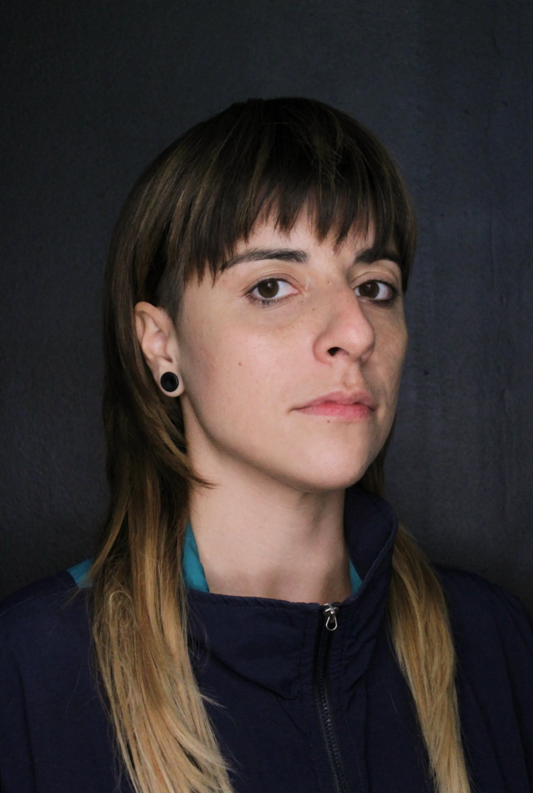
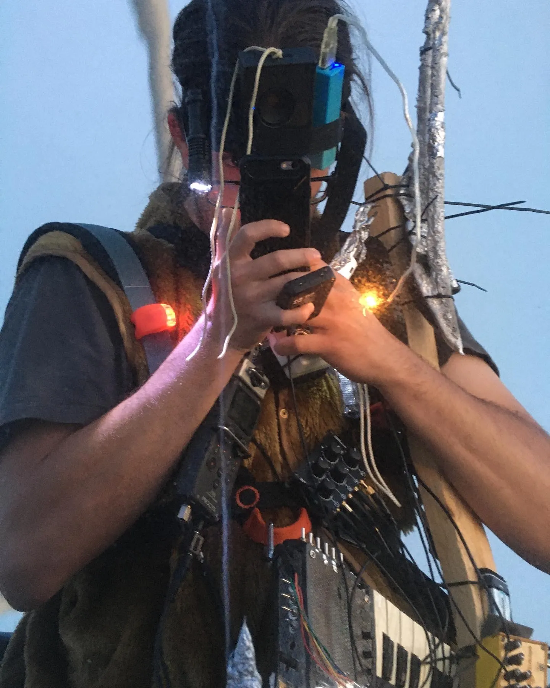
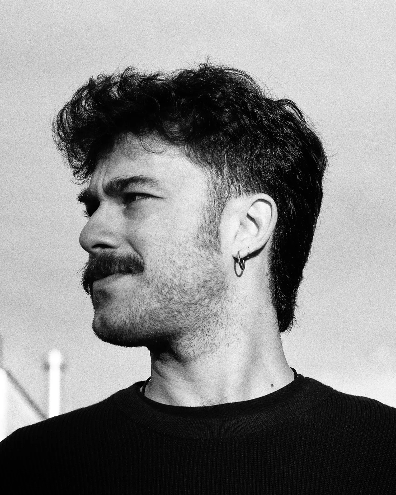
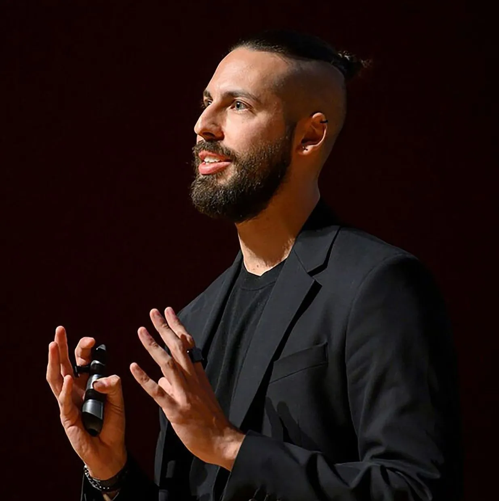

ArtistsArtisti

Clarissa Falco
Her practice, which spans visual and performing arts, investigates the body as a mechanical device: identity dissolves into repetitive gestures, transforming into a cog in a system.La sua pratica, tra arti visive e performative, indaga il corpo come dispositivo meccanico: l’identità si dissolve in gesti ripetitivi, trasformandosi in ingranaggio di un sistema.
1 Work1 Opera

Lorenzo Lunghi
His practice, intertwined with technology and the human psyche, explores the latent threats of a surveilled present. Sculptures and performative actions operate as hybrid devices that destabilize the perception of the self, embodying parasitic entities in a disintegrated and hallucinatory reality.La sua pratica, tra tecnologia e psiche umana, indaga le minacce latenti di un presente sorvegliato. Sculture e azioni performative operano come dispositivi ibridi che destabilizzano la percezione del sé, incarnando entità parassite in un reale disgregato e allucinato.
2 Works2 Opere

Adriano Tenore
His practice combines AI, sound design, and primordial signs in immersive environments where meaning and perception emerge from context, activating experiences that question identity and artifice.La sua pratica combina AI, sound design e segni primordiali in ambienti immersivi dove significato e percezione emergono dal contesto, attivando esperienze che interrogano identità e artificio.
8 Works8 Opere

Emilio Vavarella
Vavarella combines interdisciplinary research and media experimentation, exploring the relationships between technology, the body, and cognitive experience.Vavarella coniuga ricerca interdisciplinare e sperimentazione mediale, esplorando le relazioni tra tecnologia, corpo ed esperienza cognitiva.
1 Work1 Opera